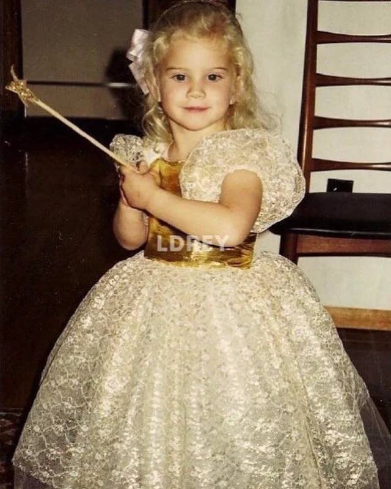
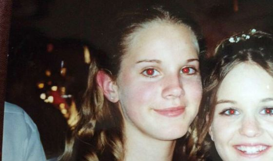

Элизабет Вулридж Грант появилась на свет 21 июня 1985 года в обеспеченной семье из Нью-Йорка. Ее отец Роберт Гранд-младший (1954 г.р.) заработал состояние в 90-е годы благодаря инвестициям сначала в недвижимость, затем в интернет-инфраструктуру. В 1982 году, еще будучи простым сотрудником рекламного агентства Grey Group, он сделал предложение помощнице бухгалтера Патриции Хилл, с которой познакомился на съемках очередного рекламного ролика.
Вскоре после рождения Лиззи семья переехала на родину Патриции, в деревушку Лэйк-Плэсид, где проходили Олимпийские игры 1980 года. Там у нее появилась младшая сестра Кэролин (1989 г.р.) и брат Чарли (1993 г.р.).
Элизабет посещала начальную католическую школу имени святой Агнесс, а на досуге пела в хорк церкви, которая находилась через дорогу. Певица признавалась, что хоть и не разделяет традиционную для католиков концепцию бога, ей нравится мысль о некоем высшем разуме и предназначении. Первую песню девочка написала в 11 лет. «Она называлась China Palace и была про то, как быть принцессой», – вспоминала певица. В школе большую часть времени девочка смотрела в окно и мечтала оказаться где-нибудь в другом месте. Так продолжалось, пока в 15 лет у Элизабет не начались уроки философии, где она нашла целый класс единомышленников, также задававшимися вопросом: «Почему мы здесь?». В то же время она открыла для себя алкоголь и быстро пристрастилась к новому развлечению. Об этих черных днях она рассказывает в песне «Born to Die». Испуганные родители отослали ее в закрытую школу-интернат в Коннектикуте, и до 18-летия девушка не выпила ни одной капли спиртного.
 